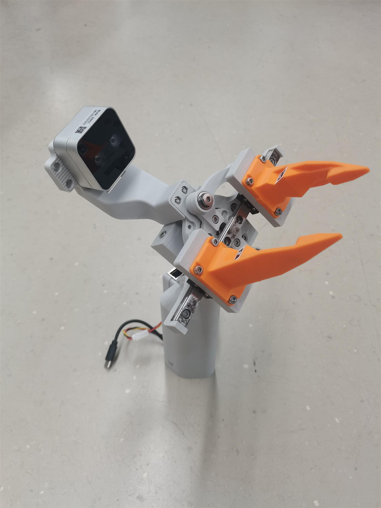
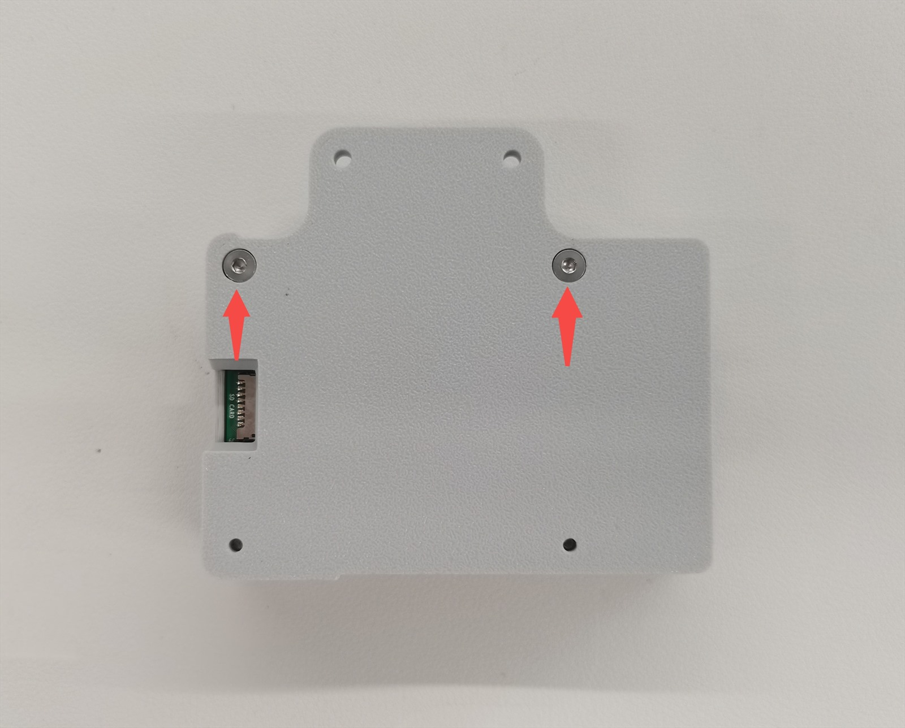
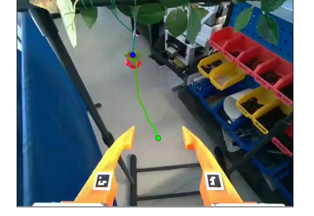

01 · COLLECT
Demonstrate
A person approaches, clears occlusions, and picks with the handheld gripper while synchronized D405 streams are recorded.
Open hardware · Version 2
SROI V2 is a UMI-style interface built around a parallel strawberry gripper and an Intel RealSense D405. A person demonstrates the task with the handheld device; a robot-side build carries the same mechanism and camera geometry for deployment.

The interface is designed to collect manipulation demonstrations without putting a robot in every scene. First-person vision and end-effector motion become the common language between the human-held and robot-mounted builds.
A person approaches, clears occlusions, and picks with the handheld gripper while synchronized D405 streams are recorded.
Masked stereo SLAM and AprilTag tracking recover camera motion and gripper opening, producing RGB + end-effector training pairs.
The motorized build presents a matched camera-to-gripper arrangement, reducing visual domain shift at the end effector.
The compact mechanism combines a D405 camera mount, parallel fingers on linear guides, AprilTags for gripper sensing, and a portable Raspberry Pi recorder.


The fingers, links, linear guides, rail base, and camera relationship are shared. The drive source and the matching crank hub change with the role.
A crank hub mates to a joint-motor flange such as the DM-4310J, creating the arm-mounted execution end effector.
A slide control actuates the fingers while the battery and Raspberry Pi are integrated into the device body.
Thumb and index-finger motion directly drives the gripper; power and recording hardware remain off the gripper body.
Hardware, acquisition, processing, and dataset each have a clear boundary. Follow the layer that matches the change you want to make.
CAD assemblies, 3D-printable parts, bill of materials, and the complete seven-step build guide.
Open hardware repoDirect pyrealsense2 capture, physical-button state machine, e-paper status, MP4 output, and deployment notes.
Open recorder repoDecoding, masked ORB-SLAM3, pose conversion, AprilTag gripper extraction, QC, and LeRobot conversion.
Open pipeline repoThe 1,459-episode training set, 100-episode held-out collection, exact feature contract, and provenance.
Open dataset guideA Raspberry Pi 5 captures D405 left IR, right IR, and color streams directly through pyrealsense2. The e-paper display and physical button run alongside the recorder without putting ROS or Docker in the current data path.

The recorder initializes the camera and moves from Idle to Ready. Session output is timestamped and stored locally.
Synchronized IR1, IR2, and color frames are buffered and recorded at 640 × 480 / 30 fps.
The episode is encoded to H.264 MP4 with hardware timestamps, camera intrinsics, and the generated ORB-SLAM camera config.
The display summarizes episodes and storage. MP4 remains the raw source; decoding happens later in a separate working tree.
The distinction matters: all three streams are recorded, but each has a specific downstream role. The public learning artifact contains one RGB stream and a 7-D action.
Gripper-masked stereo frames feed ORB-SLAM3. The result is a camera pose trajectory in a stable metric stereo scale.
Axes are converted to X-forward / Y-left / Z-up. AprilTags in color estimate the gripper. QC filters unusable episodes.
640 × 480 RGB video + next-frame xyz, rotation vector, and normalized gripper action at 30 Hz.

The original SROI system remains useful and documented. Choose one generation end-to-end; camera geometry, acquisition, processing configuration, and release format are generation-specific.
| Layer | SROI V1 | SROI V2 / current |
|---|---|---|
| End effector | Compact cut-and-hold device with modular camera / tool design | Parallel fingers, linkage, and linear-guide core in three configurations |
| Cameras | OAK-D-SR or RealSense D435i | RealSense D405 |
| Acquisition | ROS bags through the legacy Pi / Docker stack | Direct pyrealsense2 capture to H.264 MP4 |
| Trajectory | Stereo / stereo-inertial processing, depending on camera and experiment | Gripper-masked stereo ORB-SLAM3; AprilTag gripper from color |
| Public data | Zenodo ROS-bag archive | Hugging Face LeRobot v3.0 releases |
Open from mechanism to metadata
Zenan Sheng · Linsheng Hou · Zhenghao Fei — Zhejiang University
Contact: zfei@zju.edu.cn